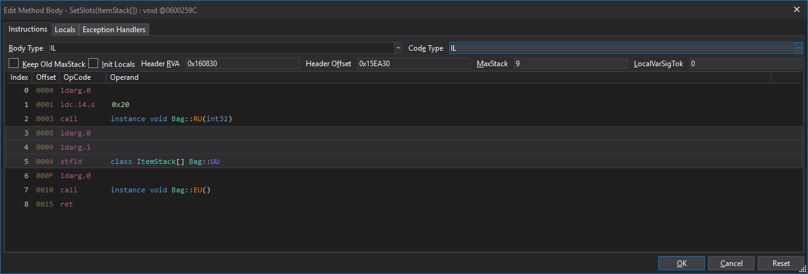
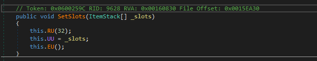

For a full list of OpCodes, click here.
Here's a sample table that lists the OpCodes and what value is expected in them.
For reference, here's a method that's displaying our OpCodes

And here's the C# Code to go alone with it:

OpCode |
Operand Type |
Description |
ldarg.0 |
Blank |
It's the first argument. In nearly all cases, it translates to "this" |
ldc.i4.s |
0x20 |
This "pushes" a 32-bit int into position. In our example, it's showing 32 rather than 0x20. However, it's displaying the decimal value in the code view (32), whereas the IL is hex: 0x20 |
call |
Method call |
This 'calls' another method', passing in the operand that was pushed above it. In this case, it's calling Bag::RU( 0x20 ), or Bag::RU( ldc.i4.s) |
ldarg.0 |
Blank |
Same as above, it calls "This" |
ldarg.1 |
blank |
This the "second" parameter passed to the method. However, it's second to "this", which is passed by default. ldarg.1, in this example, refers to "_slots" |
stfld |
ItemStack[] Bag::UU |
Updates the value in the Operand with the previous instruction. In this case, this.UU is being updated by the _slots value. |
ldarg.0 |
Blank |
Again "this" |
call |
Method Call |
Calling another method, in this case: instance void Bag::EU() |
ret |
Blank |
returns. This is a "void" method, so there's nothing to return. |
Created with the Personal Edition of HelpNDoc: Easily create HTML Help documents